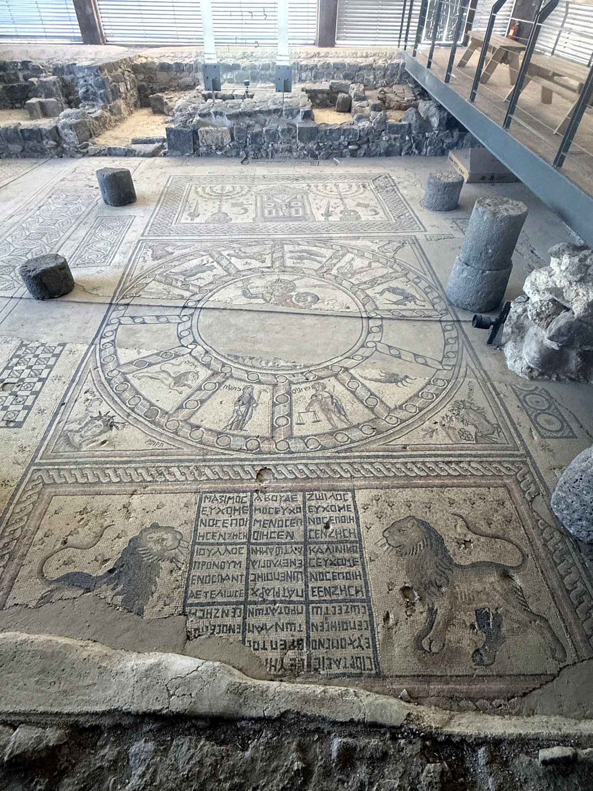

Hammat Tiberias Synagogue Mosaic

- Find Name
- Hammat Tiberias Synagogue Mosaic
- Description
- The mosaic floor of the second synagogue at Hammat Tiberias, on the shore of the Sea of Galilee south of Tiberias, excavated by Moshe Dothan in 1961-1963. Dated to the second half of the 4th century AD, it is the earliest known synagogue mosaic pavement. Its three panels show a Torah shrine flanked by menorahs and ritual objects, a zodiac wheel around Helios with nine of the twelve signs surviving and the four seasons in the corners, and Greek donor inscriptions flanked by lions, including one naming Severus, pupil of the Patriarchs, which gives the building its name, the Synagogue of Severus. The synagogue was destroyed by an earthquake in the early 5th century.
- Historical Period
- Byzantine
- Evidence Class
- Contextual
- Interpretations
- Like Beit Alpha, this floor shows zodiac and Helios imagery inside a synagogue, so it illuminates the visual world of late-antique Judaism rather than biblical practice. The uncircumcised figure of Libra has led some scholars to suggest a non-Jewish artist. The donor inscriptions show a synagogue community organised enough to record its patrons in Greek beside its Hebrew heritage.
- Alternative Names
- Hamat Tiberias Synagogue Mosaic; Synagogue of Severus Mosaic
- Related Places
- Biblical Significance
- The floor illuminates the Jewish world of the centuries after the New Testament, when synagogue worship continued around Torah, menorah and donor inscriptions in a Roman-Byzantine visual language.
- Artifact Date
- Second half of the 4th century AD
- Current Location
- In situ, Hamat Tiberias National Park, Israel
- Date Discovered
- 1961
- Discovery Location
- Hammat Tiberias, south of Tiberias, Israel
- Timeline Era
- Early Church
Awaiting Review Not yet checked against scholarly sources. Treat its claims as provisional until this entry is reviewed. About verification
Last reviewed: not yet reviewed